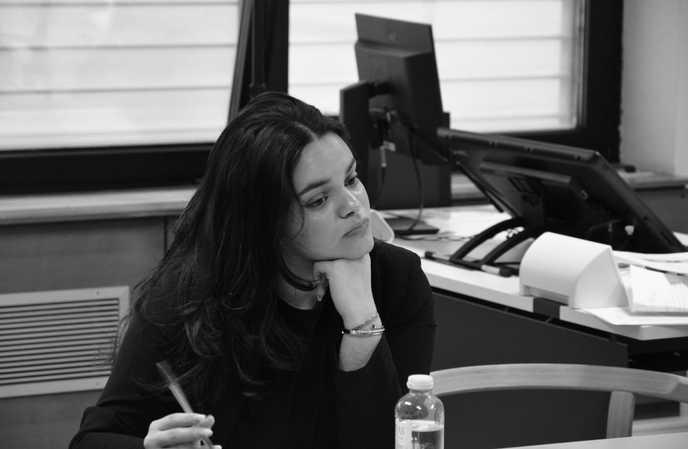

ALICIA GONZÁLEZ
Estudiante del Doble Grado en Periodismo y Comunicación Audiovisual en la Universidad Carlos III de Madrid (UC3M). Redactora en ‘En clave de Fuenla’. Entiendo el periodismo como un ejercicio profundamente humano y un pilar esencial para la democracia. Mi experiencia en Cadena SER, especialmente en las áreas de Internacional y Nacional, me ha permitido construir una mirada amplia y coherente del mundo actual. Creo en un periodismo que contextualiza, conecta lo global con lo local y pone a las personas en el centro. Informar, para mí, es ofrecer comprensión con rigor, sensibilidad y compromiso público.